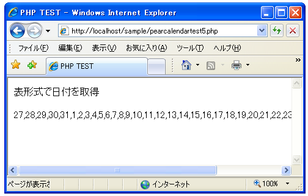

子オブジェクトを取得する
Calendarクラスのサブクラスのオブジェクトから子オブジェクトを取得することができます。例えば月を表すオブジェクトをを作成した場合、その月に含まれる日を表す子オブジェクトの一覧を取得できますし、日を表すオブジェクトからはその日に含まれる時を表す子オブジェクトの一覧を取得できます。
子オブジェクトを作成するにはCalendarクラスで用意されている「build」メソッドを使います。「build」メソッドは各サブクラス毎にオーバーライドされていますがここでは表形式のクラスである「Calendar_Month_Weekdays」クラスの「build」メソッドについて見ていきます。
Calendar_Month_Weekdays::build() boolean Calendar_Month_Weekdays::build ([array $sDates = array()])
引数： $sDates (省略可能) 選択された日付を表す Calendar_Day オブジェクト
「Calendar_Month_Weekdays」クラスのオブジェクトに対して「build」メソッドを実行すると「Calendar_Day」クラスのオブジェクトをの一覧を取得できます。
例えば2007年6月の表す「Calendar_Month_Weekdays」クラスのオブジェクトに対して「build」メソッドを実行すると2007年6月に含まれる2007年6月1日から2007年6月30日までの日付を表す「Calendar_Day」クラスのオブジェクトに加えて、表形式ですので月の初めと終わりの部分も取得することができます。
_ _ _ _ _ 1 2 3 4 5 6 7 8 9 10 11 12 13 14 15 16 17 18 19 20 21 22 23 24 25 26 27 28 29 30
2007年6月の場合で開始曜日を日曜日に設定した場合は上記のようになります。最初の5日分は実際には日付はありませんが表形式の場合はこの日付が無い部分も取得することができます。その為、取得した「Calendar_Day」クラスのオブジェクトを順に表示していくことで自動的にカレンダーのように表示することが出来ます。(2007年6月の場合は30日が丁度土曜日ですのでピッタリはまっていますが他の曜日で終わる月の場合は、月の最後にも日付が実際にはない「Calendar_Day」クラスのオブジェクトが含まれます)。
実際には次のように記述します。
$month = new Calendar_Month_Weekdays(2007, 6, 0); $month -> build();
「build」メソッドで子オブジェクトを作成して取得するのではなく、「build」メソッドを実行することで次で説明する「fetch」メソッドを使って子オブジェクトを取得することが出来るようになります。
子オブジェクトの取得
「build」メソッドを使うと対象のオブジェクトから子オブジェクトを順に取り出せるようになります。子オブジェクトを取得するにはCalendarクラスで用意されている「fetch」メソッドを使います。
Calendar::fetch() mixed Calendar::fetch ()
戻り値： Calendar のサブクラスのオブジェクト、あるいは false を返します。
「fetch」メソッドを使うと対象のオブジェクトから子オブジェクトを順に取り出す事が出来ます。取り出すオブジェクトがなくなった場合は「false」を返します。
次のように記述することで含まれる子オブジェクトを最初から最後まで順に取得することができます。
$month = new Calendar_Month_Weekdays(2007, 6, 0);
$month -> build();
while ($day = $month -> fetch()){
....
}
取得したCalendar_Dayクラスのオブジェクトから週の最初の日付なのか週の最後の日付なのかや、日付が設定されていないダミーのCalendar_Dayクラスのオブジェクトなのかを調べることが出来ます。これらについては次のページで確認していきます。
サンプルプログラム
では簡単なサンプルで実際に試してみます。
<html>
<head><title>PHP TEST</title></head>
<body>
<p>表形式で日付を取得</p>
<?php
require_once("Calendar/Month/Weekdays.php");
$month = new Calendar_Month_Weekdays(2007, 6, 0);
$month -> build();
print("<p>");
while ($day = $month -> fetch()){
print($day->thisDay().",");
}
print("</p>");
?>
</body>
</html>
上記をWWWサーバに設置しブラウザで見てみると下記のように表示されます。

2007年6月に含まれる日付を日曜日を最初の曜日として順に取得して表示します。今回の場合は特に判別を行っていないので月の初めには前月の分の日付が含まれています。
( Written by Tatsuo Ikura )

著者 / TATSUO IKURA
初心者～中級者の方を対象としたプログラミング方法や開発環境の構築の解説を行うサイトの運営を行っています。